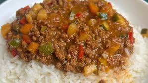

Minced Beef Stew

This recipe is sure to make your taste buds water.
Ingredients:
- An onion
- Oil
- 1 Garlic Clover
- Mince Meat
- Rice
- 3 Tomatoes,1 Red,Green & Yellow Bell pepper
- Salt
- Potatoes
- 1 Large tomamtoe & tomatoe paste
Steps
- Put 1 tbsp of oil in pan
- Grind beef and put in a seperate bowl
- Cut Onion into small pieces and cook till soft on medium heat
- Add grinded meat into pan, season with salt stir frequently
- Cut potatoe into small blocks and add to pan when meat changes colour
- Add chopped tomatoe and tomatoe paste to pan, mix well with a cup of water
- Chop bell peppers into blocks and add to pan
- Add any spices that you may like and let it simmer on medium heat for 5 min
- Cook Rice